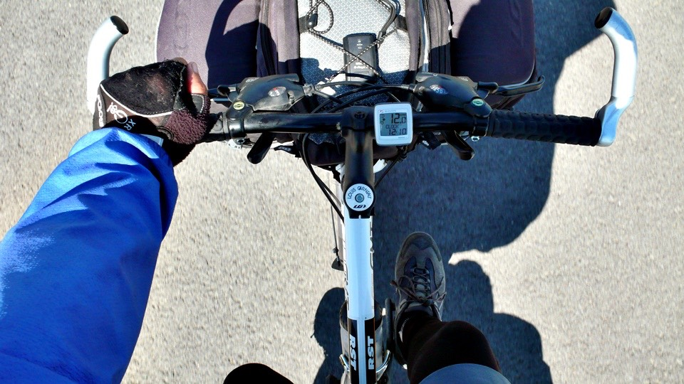
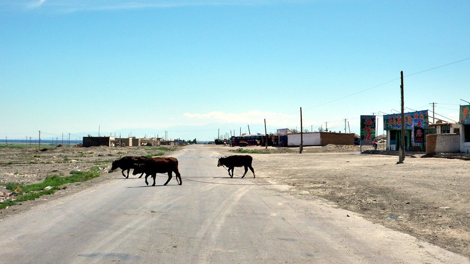
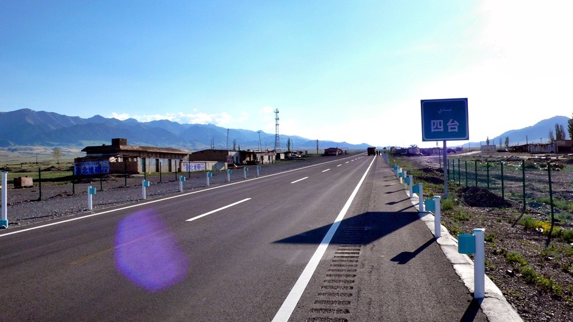

晚上房間的窗戶緊閉，所以空氣不流通，睡醒之後頭居然有點痛@@"
不以為意想說等一下騎車吹個風就會好一點了，早餐在樓下的小吃街又吃了一籠小籠包，這次配上真的是甜的豆漿。
天氣又開始變得很熱，加上頭痛的關係，好像隨時都保持在中暑狀態一樣，從精河出發之後，就是緩緩的爬坡。
路上看到很有趣的地名告示牌，前面有一個五台，再遠一點還有一個叫四台的地方，好像再打麻將算台數一樣XD
這是我每天騎車低頭的時候看到的畫面，因為頭昏的關係，現在眼睛稍微閉一下就會想睡覺。

頭昏昏的騎著車，一路上什麼鬼都沒有，連想找個加油站休息一下喘口氣都沒有，就這麼撐著騎到五台。
一開始看到五台覺得怎麼這麼小不拉磯，就沒有從出口下去，繼續沿著國道騎，然後五台才慢慢的熱鬧起來。
其實現在騎的312國道是新蓋的，當地人俗稱高速路，本來舊的312國道則是橫貫五台，但是現在已經沒有什麼車子會走舊路。
這麼一路走過來，已經看到太多小村莊因為新路的關係而變的沒落，這一條新的路對於當地的發展到底是有好處還是有壞處呢？
讓大城市發展，可是小村莊則沒落，這兩者之間有沒有比較好的平衡點？

兜了一圈之後，從另一邊的出口進入五台，房子破破爛爛的，勉強經營起來的就是一些餐廳和商店，

載客的遊覽車會讓客人在這邊吃飯，所以生意不惡，勉強還過得去吧～
找一間看起來很冷清的麵店，因為天氣很熱，胃口很差，不知道要吃什麼，就隨便點一個拌麵，吃的下多少就算多少吧。

用店裡的水把臉洗一洗，順便連頭都沖一下涼水，感覺腦袋裡面已經快被悶熟了。
一大盤麵慢慢的吃掉八成，胃口真的是很不好，可樂對我的吸引力遠大於正餐，吃喝完畢之後就在店門口趴著睡覺，吹風兼顧小多～
下午兩點抵達五台，睡醒做一下伸展操，本來想說要是睡醒還是這麼不舒服的話，今天就睡在五台就好了，不勉強騎車，但睡醒之後感覺好很多了。
下午四點半的時候離開這裡，往下一個地方騎乘，五台少一台就變成四台，接下來還有三台、二台和一台。
在五台之前的路只是悶熱和微微的上坡，從五台接著往西騎，變成熱得亂七八糟和無止盡的陡坡，今天騎到四台大概爬升了一千公尺。
比起爬坡，更令人難受的就是氣溫，要準確的傳達現在的溫度，除了看手錶的溫度計之外，還有一個很好的辦法。
小多前面的包包中放了幾包在達坂城買的巧克力，一塊錢一包，裡面就是像大波露那樣，一格一格扳著吃的巧克力。
現在從包包中拿出來一看，已經完全融化，變成巧克力醬了！連放在陰涼的包包中都可以融化，那沒有任何遮蔽物保護的我，簡直快要被蒸發了！
路上看到類似藏族或是哈薩克族的帳篷，這邊零散放牧的很多的羊，四處的吃草。
然後會有騎馬的牧民配著兩三隻牧羊犬將羊群集中起來，看是要趕回家還是往另一個水草豐盛的地方放牧。
路上看到有人在路邊和我打招呼，我帶著眼鏡和口罩，他看不出我是哪一國人，就對著我比了喝水的手勢。
我還以為他看我騎車很辛苦，所以問我要不要喝水？
結果是他自己很口渴，問我有沒有水可以分他喝？
哇哩咧，很抱歉，心有餘而力不足，我自己的水也不多，還得接著騎連續上坡了，只好請你自求多福了。
爬著惡夢一般的陡坡，想不到路可以鋪的這麼陡，而且越往前走就會越陡，直到賽里木湖才會有下坡出現。
賽里木湖這個名字很好笑，等我騎到那邊之後，我很想在湖邊住一晚上。
這樣要是有人問我今天騎到哪裡？
我就可以回答他說『賽里木！』我沒有罵人喔，這可是真實的地名。
騎到八點的時候，終於到了四台，氣喘吁吁先到商店買瓶汽水喝，四台比起五台真是小太多了。

問一下店員從這裡往賽里木湖還有多遠？
答案是還有三十公里。而且是超級陡坡，肯定騎不動車，要下車用牽的，上坡長達二十公里。
不行了，再騎下去我就要死掉了，今天就住在四台吧，剩下的磨難讓明天來承擔。
這邊餐廳兼商店兼旅館是四台僅存有生機的兩間店的其中之一，又是一個因為高速路開通而落寞的城鎮。
在西元兩千年的時候，沿著舊國道建立的四台，當時的居民可是有三～四千人之多，目前真的居住在這裡的，則剩不到五十個人。
店員的名字叫做馬小明，跟爸爸一樣都是回民，在這邊工作，他說還好我出現了，今天都沒有客人，他快要無聊死了。
和他閒聊之後才知道，原來前天有兩個外國人經過這裡，目標是哈薩克，打聽一下是年紀有點大的外國人，一男一女。
也是騎上坡騎到這邊累得要命，休息吃飯了兩個小時之後繼續往下騎，沒有住在這裡，我想應該是Heather他們吧。
目前和他們的距離只剩下兩天的路程了，順利的話在哈薩克應該可以遇到。
四台有一根大電塔，底下接著是太陽能發電板，不知道能不能發電？因為居民還是得自己用發電機才有電可以用。
四台是個缺水缺電的地方，水是從山上取回來的山泉水，電則要去加油站買汽油回來用發電機自己發電，當然要入夜之後才有電。
喝完可樂休息一下，想不到上坡加上豔陽會這麼樣的有殺傷力，好加在沒有再來一個逆風。
店裡又有客人跟我說明天往賽里木的路真的很難走，上坡很陡峭，下坡則是衝進山溝裡，彎道跟坡度都很危險。
但是等到了賽里木之後，就會看到很漂亮的湖景，然後幾乎是一路下坡到霍爾果斯，所以只要能通過上坡的考驗，中國這一段的路就算騎完了。
晚餐胃口比較好一點，可是已經不想在吃麵食了，我問小明有沒有炒麵、拌麵以外的東西？
結果有一種叫做『酸湯』的食物，裡面有肉絲、番茄、白菜和粉絲，湯很好喝，很像是羅宋湯，隨湯附贈三個花卷。
吃完之後胃口反而更好，又加點了涼拌牛肉，晚餐吃得很豐盛。
拿著相機在小小的四台閒晃，剛剛遇到的牧民把羊群都趕到這裡來了，看來除了路過的司機之外，牧民也是維持四台還沒有完全消失的客源之一
牧民們讓羊群在這裡吃草，馬兒休息、狗狗發呆、自己則吃飯。
牧羊犬看起來呆呆的。
沿著國道的商店都已經完全的荒涼了，真是不敢相信才短短幾年的時間，居然讓這邊從三～四千人的城鎮變成現在這個光景。
太陽從山頭落下之後，這裡終於開始發起電了，小明的爸爸來了四個回民的朋友，大家都很熱切的握手寒暄。
大家今天就在這邊吃飯，然後也和我睡同一間房，這裡是一個有六張床的大通鋪，一個晚上只要七塊錢。

回民大叔們吃完飯之後，都會進到房間裡面，對著西邊的方向念一些聽不懂的經文，然後跪下叩拜，雖然覺得很酷，但是不要打擾別人的宗教儀式比較好。
明天要早早的起床，看到底是多陡的坡讓每一個人都百分之百肯定的跟我說『你一定要用牽車，不可能騎的動。』
更令人期待是賽里木湖的美麗景色，太陽下山之後就睡覺啦～
繼續閱讀：6.20 賽里木湖畔的阿展瑪
中國-人民幣－ 1：4.3 台幣
6.19
總計：40元
早餐包子、豆漿5元、午餐拌麵7元、可樂3元、住店7元、可樂3元、晚餐酸湯、花捲、涼拌牛肉15元